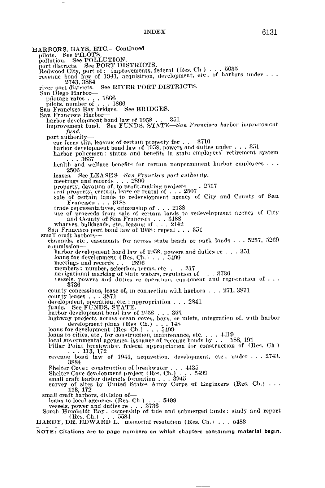
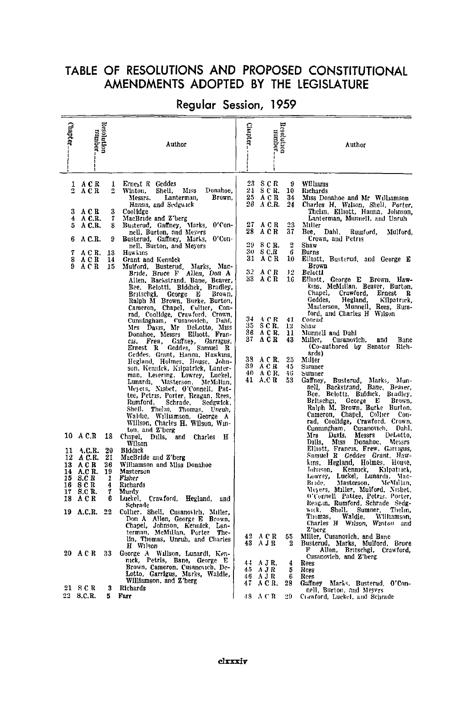
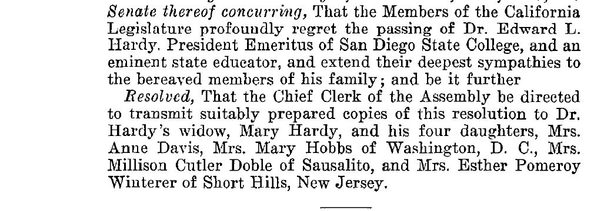

Verify the answer from official Chief Clerk PDFs:
Images below are convenience crops from the official Vol. 2 file. Do not cite this HTML page (or GitHub/jsDelivr/htmlpreview) as a verification source.


